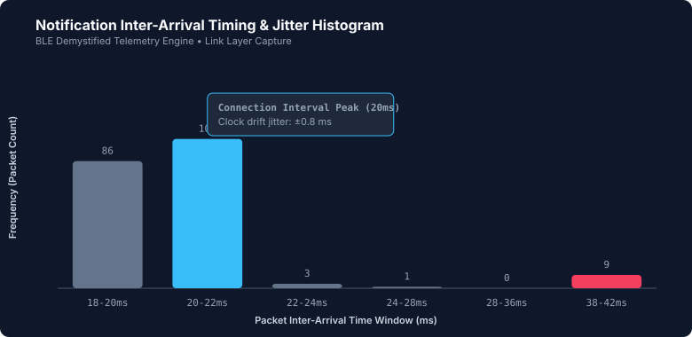

1. RSSI vs. Time (RF Multipath & Sway)
Signal Stability
What to notice: Notice how RSSI fluctuates by ±4 dBm even when stationary. This is caused by multipath fading (reflections off walls, desks, and human bodies).
Forget classic Bluetooth audio streams that suck your phone's battery dry in 3 hours. Bluetooth Low Energy (BLE) is built on one brilliant trick: the radio stays asleep 99% of the time, wakes up for a tiny 2-millisecond chirp, and immediately goes back to sleep.
Step through the exact radio packets sent over the air at 2.4 GHz.
The peripheral sits in Advertising mode. Every 100 milliseconds, it wakes up its radio and broadcasts an ADV_IND packet across the three primary advertising channels (37, 38, and 39) saying: "Hey world! I'm PulseGlow BLE, and I support Heart Rate Service!"
Directly below Wi-Fi Channel 1 to dodge 2.4GHz microwave & home router interference.
Squeezed between Wi-Fi Channel 1 and Channel 6 where spectral energy is lowest.
Above Wi-Fi Channel 11, guarding the high end of the industrial 2.4GHz band.
GAP governs what a device looks like to the outside world and which state its radio is currently in. Click any state node to highlight its valid transitions and explore its real-world behavior.
Once connected, BLE organizes all data into a clean hierarchy: Profile → Services → Characteristics → Descriptors. Click any element in the tree to inspect its 16-bit vs 128-bit UUID, permissions, and live value.
0x180D
0000180d-0000-1000-8000-00805f9b34fb
Why 16-bit UUIDs? The Bluetooth SIG reserved a 128-bit base UUID:
0000xxxx-0000-1000-8000-00805F9B34FB. To save precious packet bytes over the air,
standard profiles only transmit the 2-byte shortcut (e.g. 0x180D).
BLE performance is an engineering tradeoff between latency, throughput, and battery life. Adjust connection parameters below and observe their real-time impact on jitter and power.
Estimated Coin Cell (CR2032) Life: ~14 months
Almost everything in BLE reduces to three operations. Click the interactive buttons below to trigger real packet animations and see the exact ATT Opcodes exchanged.
Central asks for data; Peripheral answers with it. Synchronous round-trip request.
Central sends a command to update state on the Peripheral (e.g. change workout intensity).
Peripheral pushes data unilaterally whenever fresh data arrives. Zero client polling needed!
| Operation | Initiated By | Requires ACK / Response? | Throughput | Typical Use Case |
|---|---|---|---|---|
| Read | Central (Client) | Yes (ATT_READ_RSP) | Low (Round-trip latency) | Battery %, Firmware Version, Serial # |
| Write Request | Central (Client) | Yes (ATT_WRITE_RSP) | Low | Critical settings (Wi-Fi credentials, PIN) |
| Write Command | Central (Client) | No | High | LED color, motor speed, buzzer |
| Notification | Peripheral (Server) | No | Very High | Heart rate stream, accelerometer, IMU |
| Indication | Peripheral (Server) | Yes (ATT_HANDLE_VALUE_CFM) | Medium | Medical alarms, blood glucose alerts |
These publication-ready SVGs are generated by scripts/generate-plots.js directly from the simulator's RF telemetry.
Click any plot to inspect its key takeaways.
What to notice: Notice how RSSI fluctuates by ±4 dBm even when stationary. This is caused by multipath fading (reflections off walls, desks, and human bodies).

What to notice: The sharp peak at exactly 20.0 ms matches the configured Connection Interval. The tiny tail at 40 ms represents packet retransmissions at the Link Layer due to RF collisions.

What to notice: Shows both raw BPM and instantaneous RR intervals (time between R-peaks in ECG), simulating natural Respiratory Sinus Arrhythmia (breathing modulating heart rate).

What to notice: Negotiating a larger MTU (from default 23 bytes to 247 bytes) produces a 12x increase in throughput with ZERO extra radio wakeups!

What to notice: The transition from advertising channel contention to synchronized connection events. Once the anchor point is locked, packets land with microsecond precision.
Five quick questions to verify you've got the essentials down.